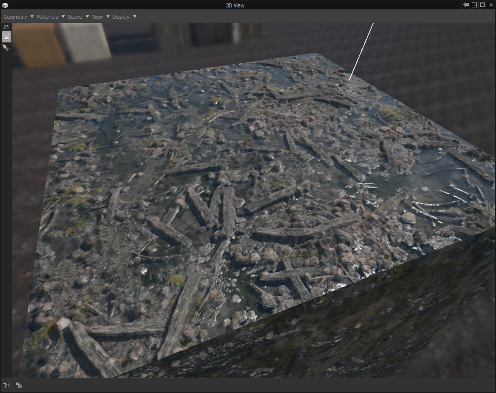
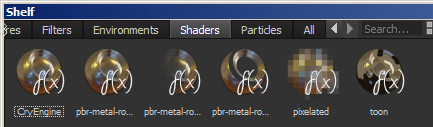
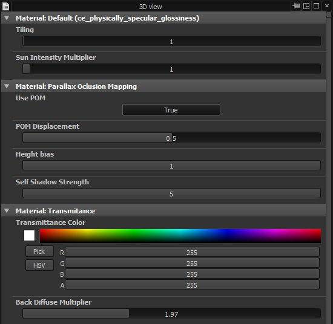
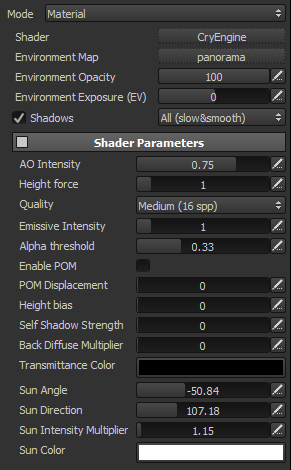
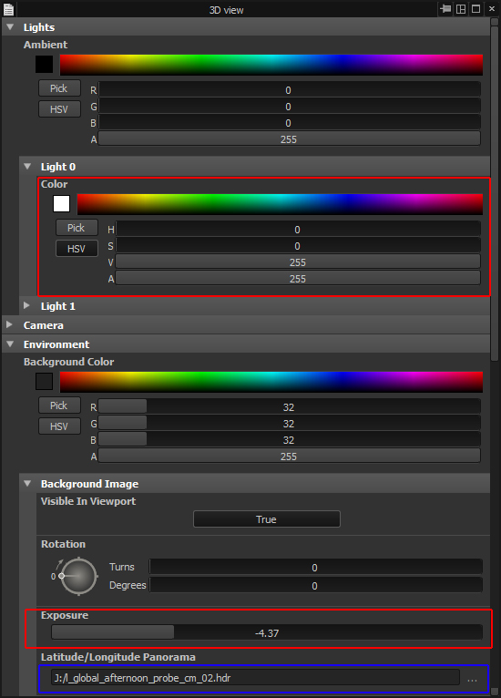
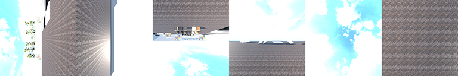
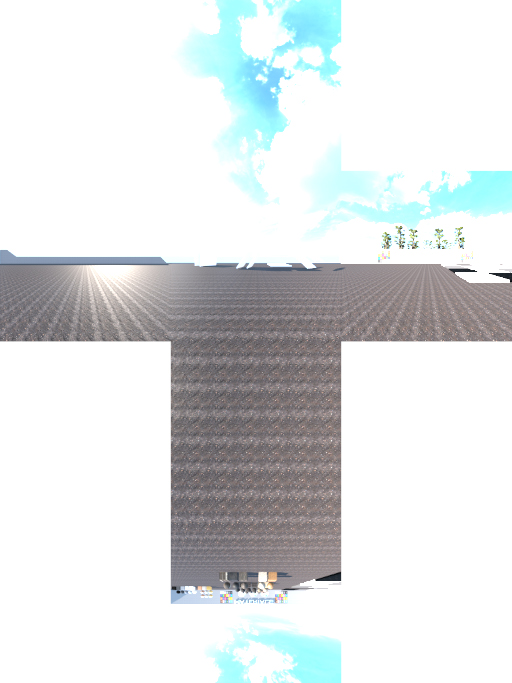
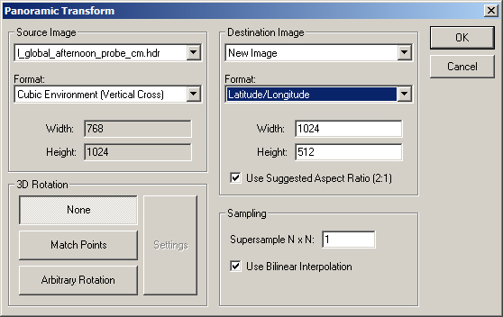

Обзор
Этот инструмент представляет собой шейдер, который пытается согласовать затенение области просмотра программного обеспечения Allegorithmic Substance Designer и Painter, точнее, с затенением, найденным в CRYENGINE.

Установка
Дизайнер веществ
Скачать Designer_shaders.zip и разархивируйте его в c:\Program Files\Allegorithmic\Substance Designer\5\resources\view3d\shaders или соответствующую папку, в которой установлен ваш Designer.
Перезапустите дизайнер. После этого новый шейдер должен появиться в списке шейдеров с именем ce_physically_specular_glossiness.
Художник по субстанциям
Скачать CryEngine.glsl и когда ваш проект открыт, перетащите его на полку «Шейдеры» в Painter:

В Painter вы должны использовать те же каналы, что и CRYENGINE:
- Базовый цвет
- Глянцевость
- Смещение
- Зеркальный
- Трансмиссивный
Использование
Этот шейдер пытается имитировать затенение CRYENGINE. Он поддерживает затенение по умолчанию при физическом рендеринге (PBR) вместе с отображением параллакса окклюзии (POM) с собственной тенью, а также поддерживает полупрозрачность.
Большинство настроек в программе Designer или Painter должны быть простыми и означать то же самое, что и в CRYENGINE.
 
Отображение параллакса-окклюзии (POM)
Substance Designer: В качестве целевой карты для карты высот используйте "Высота"
Substance Painter: В качестве исходного канала для POM используйте "Водоизмещение"
Поскольку Substance не поддерживает небольшие ступенчатые изменения значений, глубина для POM отображается в диапазоне 0–1, но она такая же, как диапазон CRYENGINE 0–0,05.
Настройка освещения
Единственный разница в настройка требует легкой обработки, поскольку Дизайнер веществ позволяет только определять интенсивность света по цвету, в то время как Художник по субстанциям в сцене вообще нет света.
Поэтому для Художник по субстанциямПараметры, связанные с солнцем, были введены для имитации солнца в сцене. В Дизайнер веществ, Интенсивность солнечного множителя был добавлен как параметр шейдера, позволяющий увеличить интенсивность солнца в сцене.

Использование кубической карты CryEngine во вьюпорте
Также можно использовать кубические карты CRYENGINE в качестве панорамного изображения в Substance:
- Откройте кубическую карту Cryengine TIF в Photoshop. (находится в папке кубических карт, с суффиксом _cm). Не пугайтесь странных цветов.

- Запустите это vertical_cubemap.jsx Скрипт Photoshop для преобразования изображения в вертикальную перекрестную кубическую карту.

- Теперь вы можете расширить границу кубической карты, чтобы было меньше швов.
- Сохраните изображение как HDR формат изображения.
- Откройте изображение в HDRShop.zip.
- Перейти в меню Изображение/Панорама/PanoramaticTranform.
- Убедитесь, что настройки указаны ниже, и, возможно, увеличьте разрешение.

- Сохранить как новый HDR изображение.
- В Дизайнер веществ, измените изображение панорамы в настройках сцены.
- Сделанный.
Разница в рендеринге Substance и CRYENGINE рендере
Помимо использования другого формата кубической карты, где Substance использует карту среды широты и долготы, а CRYENGINE использует 6-стороннюю кубическую карту, существует также разница в выборке. В то время как в CRYENGINE Выборка важности кубической карты выполняется во время генерации dds в Resource Compiler, в Substance — непосредственно в шейдере. Кроме того, CRYENGINE использует вторичную диффузную кубическую карту с низким разрешением, тогда как Substance использует коэффициенты SphericalHarmonics, рассчитанные на основе карты окружающей среды. Однако результаты должны быть схожими.
ToneMapping
Самая большая разница заключается в тональной компрессии. CRYENGINE освещает сцену необработанными значениями, которые она получает от света и кубических карт (см. самый верхний правый угол в примере кубической карты выше), а затем применяет тональную карту к окончательной сцене для компенсации.
Субстанция, однако, не компенсирует слишком много и не использует слишком низкое освещение при постобработке, но позволяет изменить экспозицию карты окружающей среды. Это почти то же самое, что уменьшить множители Diffuse и Specular для зонда окружающей среды в редакторе Sandbox.
Вот почему настоятельно рекомендуется уменьшить экспозицию карты окружающей среды в Substance и увеличить интенсивность солнца, чтобы получить результаты, более похожие на те, что получаются в CRYENGINE.